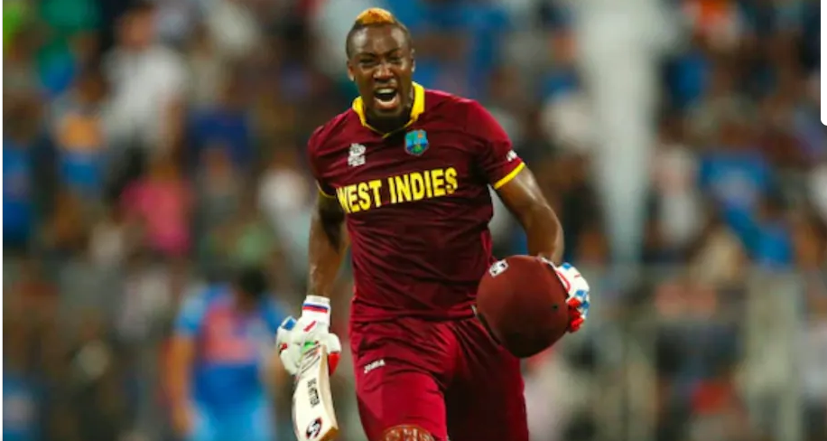
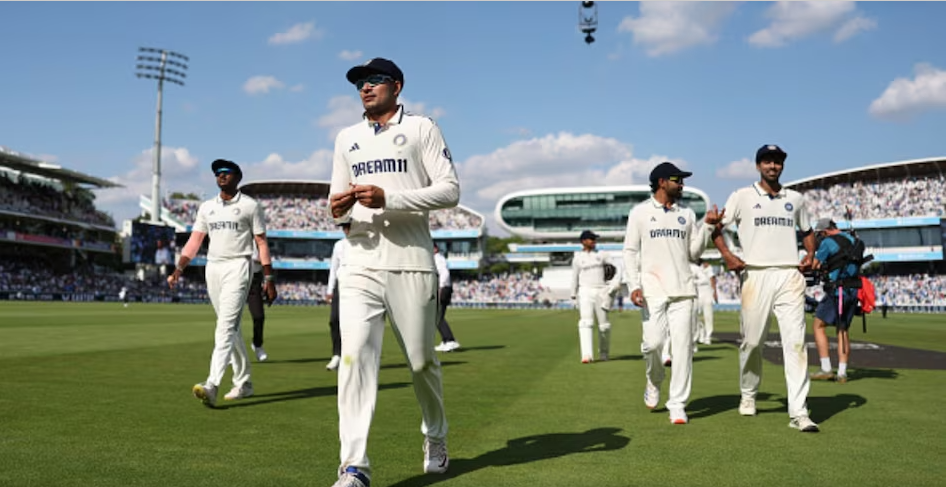
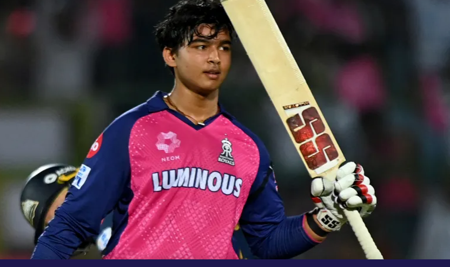

आंद्रे रसेल ने किया इंटरनेशनल क्रिकेट से संन्यास का ऐलान, AUS के खिलाफ जमैका में खेलेंगे अपना आखिरी मैच
रसेल हाल के दिनों में वेस्टइंडीज के दूसरे हाई-प्रोफाइल रिटायरमेंट हैं. हाल ही में वेस्टइंडीज के धाकड़ बल्लेबाज निकोलस पूरन ने 29 साल की उम्र में अंतरर...

Team India Test Record in Manchester: 89 साल से मैनचेस्टर में जीत को तरस रही टीम इंडिया, गिल-गंभीर की चिंता बढ़ाएंगे ये आंकड़े
HTeam India Test Record Old Trafford, Manchester: भारत-इंग्लैंड के बीच चौथा टेस्ट मैच 23 जुलाई से मैनचेस्टर में खेला जाना है. 5 मैचों की इस सीरीज में ट....

Vaibhav Suryavanshi ने बॉलिंग में रचा इतिहास!
16 जुलाई 2025
14 साल के भारतीय क्रिकेटर वैभव सूर्यवंशी ने एक बार फिर इतिहास रच दिया है. इस बार वैभव ने गेंदबाजी में महारिकॉर्ड बनाया है